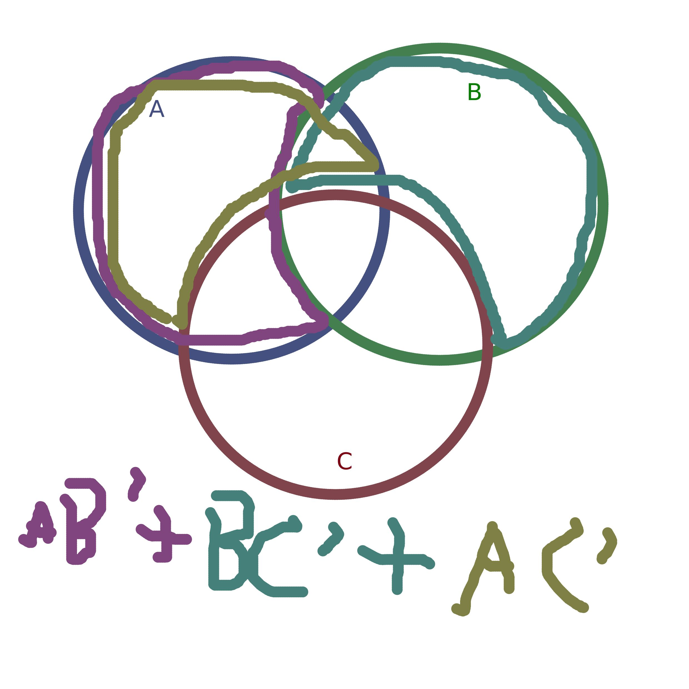

Very Real SC Meeting notes
Sample of Officer Notes for a Club I'm in
4/16
From what I remember having something in a span allows me to edit it with css specifically. But it's been a while. There's a lot to cover today folks
Today's peeps
- Matt
- Stef
- Paco
- Yu-ch
- Plan for Intel oneAPI SYCL Meeting
- Finishing the room key forms
- Need to make slides for WIC meeting workshop
- Set forward what to do with RPI
- Let members know of hyperwall it's gone
- Remove Rolls
- Fix Bot to remove the option
- Archive Channel
- Delete Channel/Hide it
You may think that by the end of the day you and I may be the same in this endeavor, but you are wrong. You may have your strengths, and I have mine. And they are very important to us all. Anyways here's a link to the page I left off on the advent of Void.
I hope you can see there was a lot of viewing a Venn Diagram from last weeks meeting.